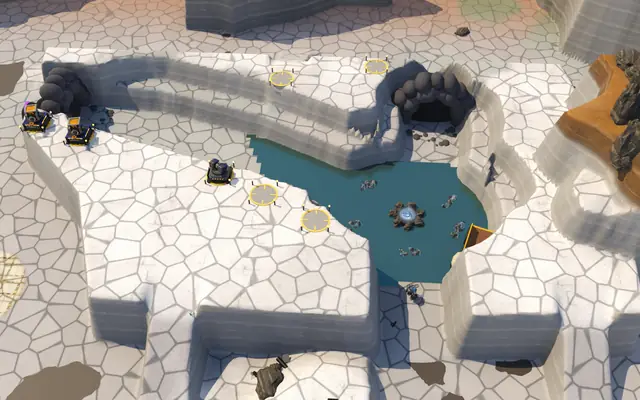
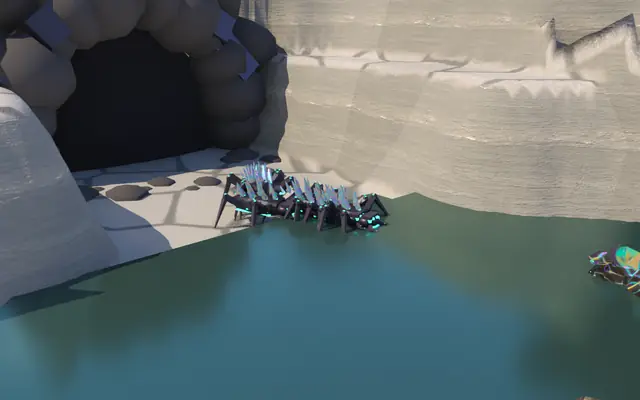
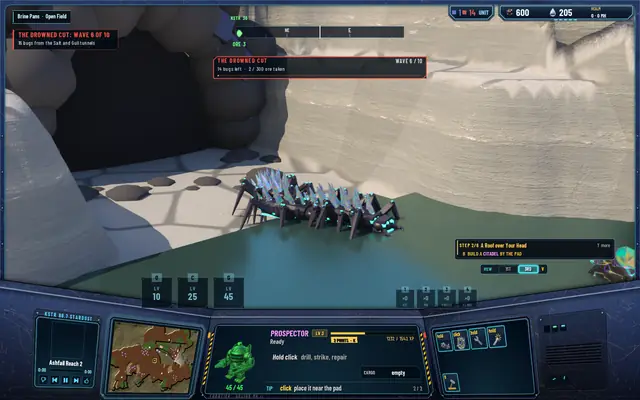
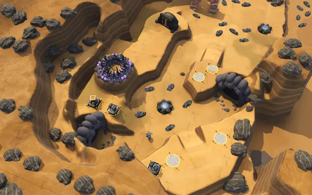
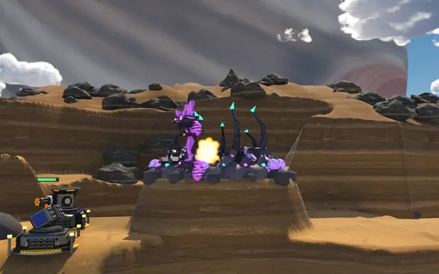
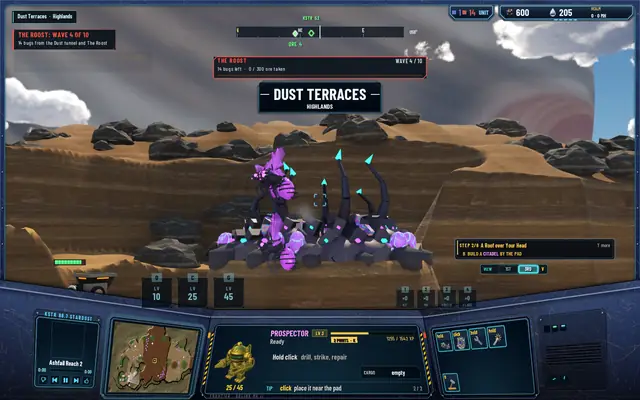
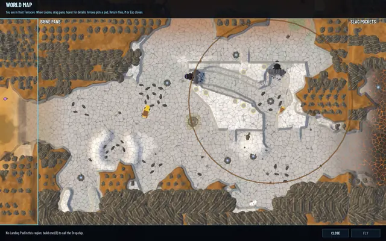
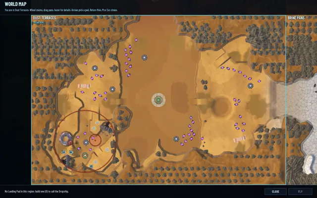

Two more canyons: the brine and the roost
The Fork has company. The Drowned Cut in Brine Pans is a flooded basin where the Brood's walkers wade at half speed, and The Roost in Dust Terraces has a spire every Gloamwing launches from, over the walls and past the tunnels' guns.

Each canyon plays The Fork's game: ten waves along its arms to a prize, the first replaying until beaten, the Matriarch if a wave gets through, the canyon held for a world day after the tenth. What each one adds is a twist of its own.
The Drowned Cut, Brine Pans
Brine Pans is the salt flats, so its canyon is flooded. Two arms meet in a basin: the long Salt arm winding in from a tunnel in the west wall, and the short Gull arm dropping in from the north. The prize is five deposits of 6,000 ore round a 6,000 MH well, and a half-drowned hauler lies on the east shore. Seven build spots sit on the Salt arm's south rim, the basin's west rim and the north rim.
The brine covers the basin and the lower Salt arm, and the Brood's walkers wade through it at half speed, so they spend longer under the rims' guns. Gloamwings fly over it unslowed, and so do pilots: your Prospector's movement is predicted on your machine, and a slow the server applied alone would rubber-band you. The waves are walker-heavy for it, 120 walkers over the ten waves against The Fork's 115, with the mini-boss Lodebacks from wave 5.
Measured: the Salt arm takes 12.8 seconds to march through the brine against 10.7 dry. Of 2,104 samples of wading walkers, 2,104 were slowed; of 4,150 samples of flyers, none.
The Roost, Dust Terraces
Dust Terraces is stepped sandstone with high ledges, which is where the Gloamwings roost. Its canyon is a mesa over the south-west terrace with two tunnels, the Ochre and the Dust, winding to a basin, and a spire rising at the basin's west edge with a nest of chitin on top. The prize is five deposits of 7,500 ore round a 7,500 MH well, with seven build spots on the rims.
The spire is the twist. One of the zone's entrances is a roost, a ledge and not a tunnel, and every Gloamwing of a wave comes off it, a level or more over the prize, and flies down over the walls. The walkers still come out of the tunnels. So the flyers come from the one place the tunnels' guns don't cover, and the AA towers belong by the spire. The warnings say it as it is: "14 bugs from the Dust tunnel and The Roost". It's a level-3 region, so the waves are heavier, 63 flyers over the ten against The Fork's 34, and wave 10 is 42 bugs.
The pay of a level-3 canyon is higher than The Fork's. The balance pass is going over every number in the economy right now, so the figures wait for it.
In pictures

The Drowned Cut from above.
A Lodeback wading at half speed.
Wave 6 of The Drowned Cut: 16 bugs from the Salt and Gull tunnels.
The Roost from above, the nest on its spire at the basin's west edge.
Gloamwings off the roost, under fire.
Wave 4 of The Roost: 14 bugs from the Dust tunnel and The Roost.
Brine Pans on the map, the canyon ringed.
Dust Terraces on the map.


The same for every canyon
The states, the fail mark, the Matriarch's siege and the hold are The Fork's. A frontier defender goes to any canyon whose wave a human is holding. And the save keeps each zone's row, so the three canyons' games carry on between sessions.